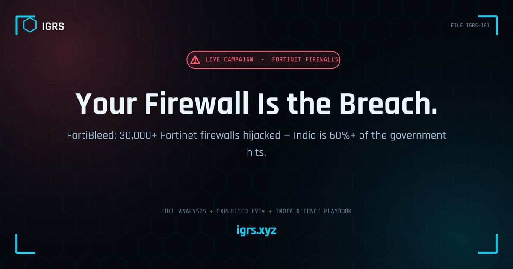

FortiBleed: Tens of Thousands of Fortinet Firewalls Hijacked — and India Is Over 60% of the Government Hits
The device that is supposed to be your first line of defence has become the breach. A live campaign that researchers have named FortiBleed has quietly compromised tens of thousands of internet-facing Fortinet firewalls and SSL-VPN gateways across nearly 200 countries — and the most uncomfortable detail for readers here is that India makes up the single largest slice of the government devices in the attacker's database. This is not a future risk or a vendor advisory about a theoretical flaw. It is an operation that is running right now, the compromised devices are mostly still online, and the security firms that found it are telling affected organisations to assume their perimeter is already breached. Here is what is actually happening, which Fortinet vulnerabilities are being exploited alongside it, what it means for Indian networks specifically, and the immediate steps that matter.
What happened
The campaign came to light when security researchers found an operational server the attackers had left exposed — a mistake that handed investigators a view into the group's tooling, automation, victim database and a repository of verified credentials. SOCRadar, which published an analysis on 16 June 2026, reported login credentials for more than 30,000 devices belonging to companies and government organisations across 194 countries. Follow-on analysis the next day from other researchers put the footprint substantially higher — into the range of roughly 73,000 to 75,000 unique Fortinet firewall endpoints and over 21,000 affected domains, which by some estimates is around half of all internet-facing Fortinet firewalls. Whichever figure you take, the scale is enormous, and the assessment across the reporting is consistent: this is one of the largest perimeter-device compromises seen to date, and it is ongoing.
Attribution evidence points to a Russian-speaking, multi-operator threat group, with victim selection weighted toward NATO member and NATO-adjacent states. The operation is professional and almost entirely automated — which is precisely why it scaled the way it did.
The India angle
For an Indian audience this is not a distant story. Analysis of the exposed dataset indicates that India accounts for over 60% of all the government entries in the attacker's database, and telecom is the most heavily affected sector by volume — significant because telecom infrastructure underpins communications for every other sector. With hundreds of government-domain entries in the dataset and Fortinet appliances deployed extensively across Indian government, telecom, banking and enterprise networks, FortiBleed carries direct national-security weight here, not just commercial risk. Any Indian organisation that finds itself in scope is also looking at a CERT-In reporting obligation, which is covered below.
How the attack works
FortiBleed is built as a self-sustaining loop rather than a single clever exploit, and understanding the loop is what makes the defence obvious:
- Scan. Automated infrastructure continuously scans the internet for exposed Fortinet management and VPN interfaces.
- Reuse. Against each device it tries previously leaked Fortinet credentials and curated password lists — credential stuffing, credential reuse and password spraying at massive volume. Public reporting describes on the order of a billion-plus credential attempts against hundreds of thousands of FortiGate targets.
- Validate. Every successful login is recorded into a verified-credential database.
- Listen and multiply. Once a device is compromised it is used as a listening post — monitoring the traffic passing through it and collecting any further credentials that flow by. Those fresh credentials are fed back into the scanner to compromise even more devices.
Beyond the credential loop, the group's tradecraft reportedly extends to intercepting SSL-VPN authentication, cracking captured hashes on a dedicated multi-GPU cluster, and using the recovered access to pivot into internal Active Directory environments for follow-on persistence. The critical point for defenders is that much of this turns on reused and previously leaked passwords — when a password is recovered in plaintext, its length and complexity stop mattering. A perimeter built on a strong-but-reused admin password offers no protection here.
The Fortinet flaws being exploited alongside it
Credential abuse is not the only vector in play. In the same window, researchers and honeypots have observed active exploitation of several Fortinet vulnerabilities, so patching status matters as much as password hygiene:
| CVE | Component / type | Status |
|---|---|---|
| CVE-2026-39813 (CVSS 9.1) | FortiSandbox JRPC API — path traversal / authentication bypass | Patched April 2026; exploitation observed |
| CVE-2026-39808 (CVSS 9.1) | FortiSandbox — OS command injection (unauthenticated) | Patched April 2026; exploitation observed |
| CVE-2026-25089 (CVSS 9.1) | FortiSandbox WEB UI — OS command injection | Patched in the June 2026 cycle; exploit attempts seen (one reportedly AI-generated and faulty) |
| CVE-2026-35616 (CVSS 9.1) | FortiClient EMS — API authentication bypass | Patched April 2026; abused to push the "EKZ" credential stealer disguised as a Fortinet patch |
The FortiClient EMS thread is its own cautionary tale: attackers used the management server's own update pathway to deliver a credential stealer dressed up as a legitimate Fortinet endpoint patch, then exfiltrated browser-stored credentials, cookies and autofill data — the kind of session material that can grant follow-on access to cloud services even where MFA is enabled.
Why edge devices are now the front line
FortiBleed is the clearest illustration yet of a structural shift: the security appliance at the network edge is itself a high-value target, and a public-facing management interface in 2026 is a liability rather than a convenience. Firewalls and VPN gateways are ubiquitous, they sit directly on the internet, and a single compromised one yields a foothold plus a vantage point to harvest everything passing through. The defensive implication is to stop treating the perimeter box as a trust boundary you can set and forget, and to move toward continuous verification — zero-trust network access to supplement or replace flat SSL-VPN, micro-segmentation to contain lateral movement, and monitoring of the device itself, not just the traffic behind it.
Immediate defensive playbook
If you operate Fortinet firewalls or VPNs, the consensus guidance from the researchers who uncovered this is to act now and to act as though you are already in the dataset:
- Treat the perimeter as compromised. Do not wait for confirmation; begin incident response on the assumption of exposure.
- Rotate every administrative and VPN credential immediately — and do not stop at the password, because a compromised device may already hold backdoors or sniffers.
- Pull management interfaces off the public internet. Restrict admin access to a management network or VPN; never expose the FortiOS management UI to the open internet.
- Patch to current FortiOS / FortiSandbox / FortiClient EMS firmware to close the actively exploited CVEs above.
- Enforce phishing-resistant MFA (FIDO2 / hardware keys or certificate-based) on all remote-access and administrative accounts.
- Review all authentication and VPN logs for anomalous logins, impossible-travel, and access from hosting/VPN ranges; preserve logs before they roll over.
- Hunt on the device and inside the network — look for unexpected admin accounts, configuration changes, new tunnels, and signs of Active Directory reconnaissance or lateral movement.
- Check credential exposure. Assume leaked-password reuse is the entry point and audit accounts against known breach data; individuals can sanity-check their own exposure with a privacy-first tool such as the IGRS Breach Check.
The investigator's view
An edge-device compromise leaves a different evidence trail than a typical endpoint case, and the perimeter appliance is both the crime scene and a logging goldmine if its records survive. The high-value artefacts are the device's own authentication and admin logs (successful logins, source IPs, session times, configuration changes), VPN session records, and any newly created accounts or tunnels. Because the attack reaches inward, correlate those against internal Active Directory authentication events for signs of the pivot. A practical first move on any suspicious source address pulled from the logs is to profile it — datacentre versus residential, ASN, geolocation and abuse history — before correlating it across devices and accounts; the IGRS IP Lookup is built for exactly that triage. Preserve the device configuration and logs with hash integrity for admissibility, and remember that a wiped-and-reimaged appliance destroys the very evidence an investigation needs — capture first, remediate second.
The India context
Given that India is the largest source of government devices in the dataset, Indian organisations carry concrete obligations on top of the technical response. Under the CERT-In Directions of 2022, qualifying cyber incidents must be reported to CERT-In within six hours of detection, so confirming exposure should start that clock alongside containment. Operators of Critical Information Infrastructure must also notify the NCIIPC, and where personal data is exposed the Digital Personal Data Protection Act, 2023 applies. If a compromised network leads to financial fraud downstream, victims should use the 1930 helpline and the National Cybercrime Reporting Portal without delay. The breadth of telecom and government exposure here is exactly the scenario these reporting channels exist for.
Legal context (India)
| Provision | Relevance |
|---|---|
| S.43 & S.66 IT Act 2000 | Unauthorised access to a computer resource / dishonest or fraudulent computer offences — the core of the intrusion |
| S.70 IT Act | Protected systems — relevant where compromised devices sit in Critical Information Infrastructure |
| S.66F IT Act | Cyber terrorism — potentially engaged where critical infrastructure or national security is affected (applied cautiously, on the facts) |
| S.43A IT Act / DPDP Act 2023 | Reasonable security practices and breach handling where personal data is exposed |
| CERT-In Directions 2022 | Mandatory reporting of qualifying incidents to CERT-In within six hours of detection |
| S.94 BNSS 2023 | Production of documents and records — to compel logs from service providers and intermediaries (replaces CrPC 91) |
| S.63 BSA 2023 | Electronic-evidence certificate — admissibility of device logs and forensic artefacts (replaces IEA 65B) |
Note: the applicable provisions depend on the facts established during investigation; the above is indicative of how an edge-device intrusion of this kind is typically framed in India.
Bottom line
FortiBleed is a blunt reminder that the perimeter is not a wall you build once — it is an attack surface that has to be actively defended, patched and watched, and that reused passwords quietly undo even strong policies. With India sitting at the centre of the government exposure, this is a national-scale prompt to do the unglamorous work now: get management interfaces off the internet, rotate credentials, patch the known-exploited CVEs, turn on phishing-resistant MFA, and read the logs. The attackers automated their way to tens of thousands of devices. Defenders will have to be just as systematic.